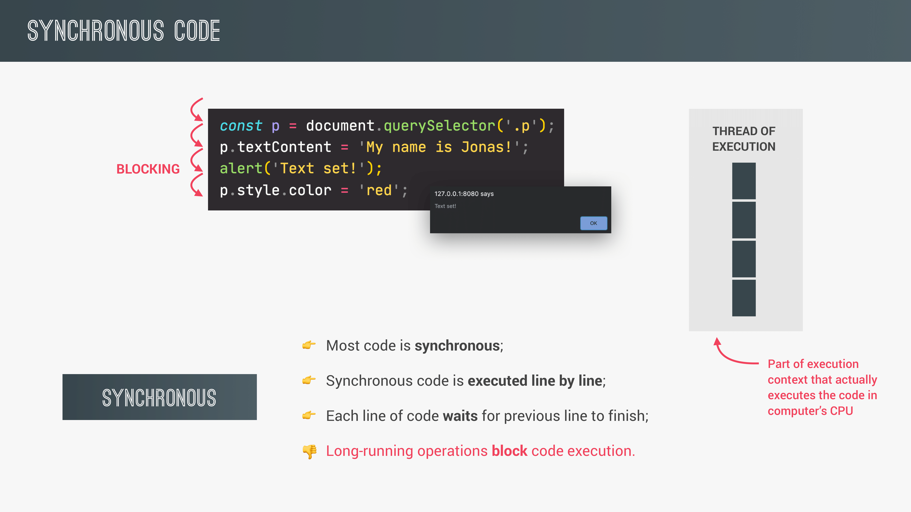
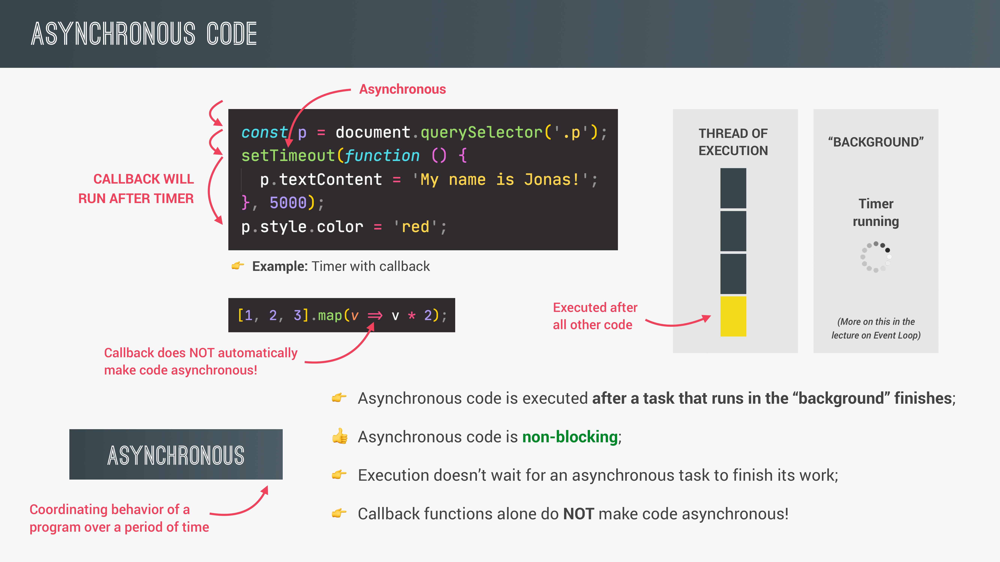

ASYNC JS, AJAX and API
Synchronous code -
Code that is executed line by line, each line of code waits for the
previous code to finish. Blocks code execution.

Asynchronous code -
Blocking code gets executed in the BACKGROUND, does not block code
execution. Also called non-blocking code.

AJAX: Asynchronous JavaScript And XML -
Allows us to communicate with remote web servers in an asynchronous
way. With AJAX calls, we can request data from servers dynamically,
without reloading the page.